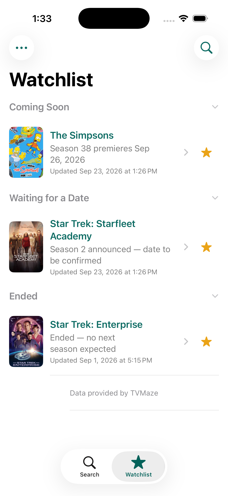
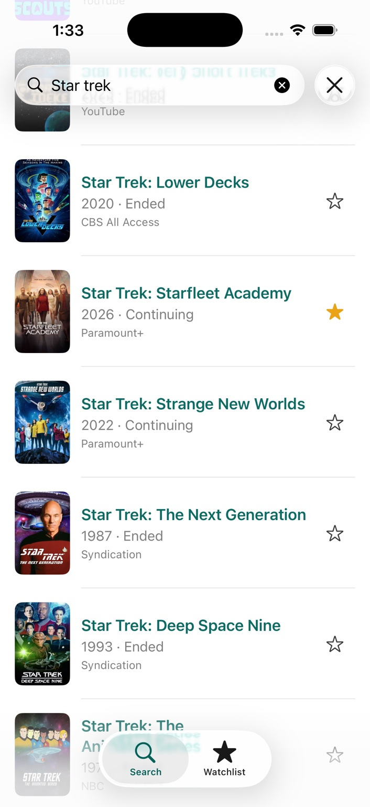
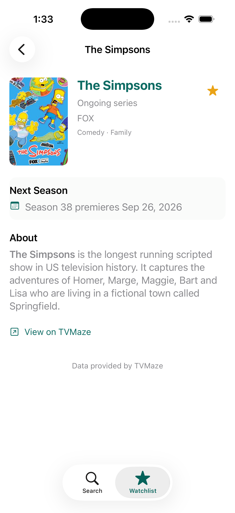

Made for the between-seasons wait
Great shows stay with you.
The dates don't always.
You finish a season. You find something else to watch. Months go by, and the show you meant to come back to slips your mind.
01 / Keep track
A home for your
favorite shows.
That show you loved last year? Keep it on your list. NextSeason holds the shows you’re watching, so you don’t have to keep them all in your head.
More than three favorites? Meet Plus →
02 / Find your favorites
Search. Add.
Look forward to it.
Search for a show and add it to your watchlist in a few taps. It’s a small step that makes picking things back up a lot easier. Once it’s there, NextSeason keeps an eye on what’s coming next.

03 / See what’s next
Less wondering.
More anticipation.
Be notified when the schedule of any of your shows changes. Whether a premiere gets a date or an unexpected new season is announced, you’ll know where things stand. You can also view show details in the app at any time.
Release plans can change. A premiere date may not be available right away when a new season is announced.

Have a longer list? There’s Plus.
Keep all your favorites together, beyond the free three-show limit.